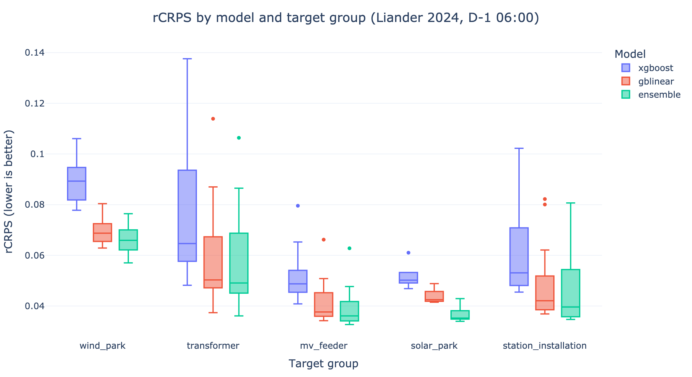

Benchmark Results#
How accurate are OpenSTEF’s models in practice? This page reports reference performance on the public Liander 2024 STEF benchmark, so you can compare models before committing to one. Use it together with the Model Selection Guide (which explains why each model behaves the way it does) and BEAM (which explains how these numbers are produced).
Warning
These numbers are dataset-bound. The Liander 2024 benchmark is derived from Dutch grid operational data and uses a specific set of features, weather data providers, and signal types. Performance depends heavily on signal quality and the quality of your input data — your results may be better or worse.
To understand how models perform on your use case, create your own benchmark with your own data (see Build Your Own). You can reproduce these exact numbers by running the benchmark notebooks under Liander 2024.
At a Glance#

Each box shows the distribution of per-target rCRPS within a target group (one
point per target). Lower is better.
Takeaways
The ensemble is the most accurate model across every target group, on both the unweighted and the peak-weighted metric.
GBLinear is a strong, consistent second and a good single-model default — especially where extrapolation beyond the training range matters (congestion).
XGBoost alone trails the other two on this benchmark. The ensemble does not use it: it blends GBLinear with a LightGBM learner, pairing GBLinear’s linear extrapolation with complementary non-linear structure.
The gap between models widens under the peak-weighted metric (see rCRPS sample-weighted), most visibly for the highly intermittent solar and wind targets.
The Metrics#
All scores on this page are variants of the Continuous Ranked Probability Score (CRPS), the standard proper scoring rule for probabilistic forecasts. CRPS generalizes the absolute error to a full predictive distribution: it rewards forecasts whose quantiles are both sharp and well-calibrated, and it is expressed in the same units as the load. A perfect forecast scores 0.
CRPS in raw load units cannot be compared across targets of different size (a feeder peaking at 1 MW versus one at 50 MW). The benchmark therefore reports two relative variants.
rCRPS#
Relative CRPS normalizes the CRPS by the operating range of the observed load — the gap between its 1st and 99th percentile:
This makes the score scale-invariant: roughly, the average distributional error as
a fraction of how much the target moves. A value of 0.05 means the typical
probabilistic error is about 5% of the target’s operating range. Every timestamp counts
equally. Lower is better.
rCRPS (sample-weighted)#
For grid operations the moments that matter most are high-load periods — that is when congestion risk is highest. The sample-weighted variant computes the same rCRPS but weights each timestamp by its load magnitude, so peaks dominate the score and near-zero load is de-emphasized (down to a floor weight):
Use this metric when peak accuracy is the priority. Intermittent targets (solar, wind) score noticeably worse here than on the unweighted metric: they sit near zero much of the time, so up-weighting their large, hard-to-predict peaks raises the relative error.
Tip
For a single, intuitive accuracy number prefer rCRPS. When your use case is congestion management or peak shaving, lead with rCRPS (sample-weighted).
rMAE (P50)#
Relative Mean Absolute Error at P50 measures the accuracy of the median (P50) forecast alone, normalized by the same operating-range denominator as rCRPS:
Use this when you care about point-forecast accuracy at the median rather than the full probabilistic distribution.
Results by Model and Target Group#
Rows are models; columns are the benchmark’s target groups plus the Global average across all 55 targets. Each cell is the mean metric value over the targets in that group (each target weighted equally). Lower is better; the best model per column is in bold.
Model |
Global |
MV feeder |
Station inst. |
Transformer |
Solar park |
Wind park |
|---|---|---|---|---|---|---|
XGBoost |
0.065 |
0.052 |
0.062 |
0.075 |
0.052 |
0.089 |
GBLinear |
0.051 |
0.041 |
0.049 |
0.059 |
0.044 |
0.070 |
Ensemble |
0.049 |
0.039 |
0.047 |
0.058 |
0.037 |
0.066 |
Model |
Global |
MV feeder |
Station inst. |
Transformer |
Solar park |
Wind park |
|---|---|---|---|---|---|---|
XGBoost |
0.082 |
0.056 |
0.068 |
0.085 |
0.113 |
0.156 |
GBLinear |
0.063 |
0.045 |
0.054 |
0.069 |
0.077 |
0.107 |
Ensemble |
0.059 |
0.042 |
0.053 |
0.067 |
0.069 |
0.096 |
Model |
Global |
MV feeder |
Station inst. |
Transformer |
Solar park |
Wind park |
|---|---|---|---|---|---|---|
XGBoost |
0.084 |
0.067 |
0.079 |
0.095 |
0.067 |
0.111 |
GBLinear |
0.084 |
0.067 |
0.079 |
0.094 |
0.070 |
0.110 |
Ensemble |
0.078 |
0.063 |
0.074 |
0.089 |
0.062 |
0.103 |
How These Numbers Were Produced#
Dataset |
Liander 2024 STEF benchmark — 55 real grid targets across 5 groups (MV feeders, station installations, transformers, solar parks, wind parks). |
|---|---|
Models |
|
Forecast moment |
Day-ahead, with all inputs restricted to what was available at D-1 06:00 (no future data leakage). |
Evaluation |
Sequential BEAM backtest over 2024. rCRPS is computed per target from quantile forecasts (normalization range \(P_1\)–\(P_{99}\)), then averaged within each group. |
For the full methodology — how the backtest prevents leakage and how metrics are segmented — see BEAM. To benchmark your own model or data on the same footing, see the Build Your Own benchmarks.